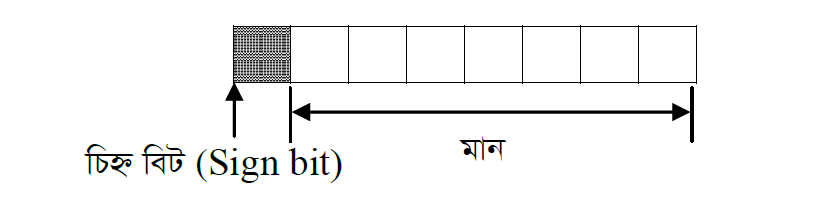
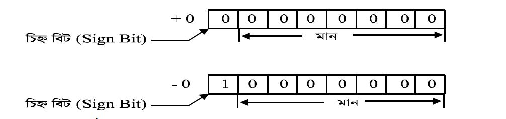
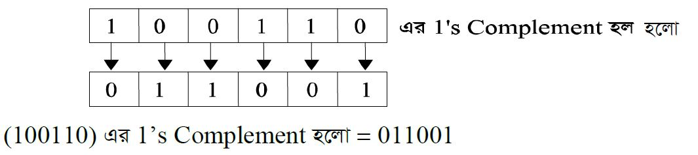

যখন কোন সংখ্যার পূর্বে ধনাত্মক(+) বা ঋণাত্মক(-) চিহ্ন থাকে তখন সেই সংখ্যাকে চিহ্নযুক্ত সংখ্যা বা সাইনড নম্বর বলা হয়।
বাইনারি পদ্ধতিতে চিহ্নযুক্ত সংখ্যা বুঝানোর জন্য প্রকৃত মানের পূর্বে একটি অতিরিক্ত বিট যোগ করা হয়। এ অতিরিক্ত বিটকে চিহ্ন বিট বলে। চিহ্ন বিট 0 হলে সংখ্যাটি ধনাত্মক এবং চিহ্নবিট ১ হলে সংখ্যাটিকে ঋণাত্মক ধরা হয়।

চিহ্নযুক্ত সংখ্যার উপস্থাপনাঃ কম্পিউটার সিস্টেমে চিহ্ন যুক্ত সংখ্যা উপস্থাপনার জন্য তিনটি পদ্ধতি আছে। যথাঃ
১। প্রকৃত মান গঠন (Signed magnitude form)
২। ১ এর পরিপূরক গঠন (1’s Complement form)
৩। ২ এর পরিপূরক গঠন (2’s Complement form)
এক্ষেত্রে তিনটি পদ্ধতিতেই ধনাত্মক সংখ্যার উপস্থাপনা একই। অর্থাৎ ধনাত্মক সংখ্যার ক্ষেত্রে চিহ্ন বিট ছাড়া বাকি অংশটি সংখ্যার মান জ্ঞাপন করে। তবে ঋণাত্মক সংখ্যার ক্ষেত্রে উপস্থাপনা ভিন্ন ভিন্ন হয়।
***Note: উপরিউক্ত তিনটি পদ্ধতিতে চিহ্ন যুক্ত সংখ্যা উপস্থাপনার জন্য রেজিস্টার সম্পর্কে প্রাথমিক ধারণা থাকতে হবে। রেজিস্টার হলো একগুচ্ছ ফ্লিপ-ফ্লপ এবং গেইটের সমন্বয়ে গঠিত সার্কিট যা অস্থায়ী মেমরি হিসেবে কাজ করে। এর প্রত্যেকটি ফ্লিপ-ফ্লপ একটি করে বাইনারি বিট সংরক্ষণ করতে পারে। n বিটের একটি রেজিস্টার n বিটের বাইনারি তথ্য ধারণ করতে পারে। ৮-বিট রেজিস্টার, ১৬- বিট রেজিস্টার, ৩২-বিট রেজিস্টার ইত্যাদি- যারা যথাক্রমে ৮, ১৬, ৩২ বিট তথ্য ধারণ করতে পারবে।
প্রকৃত মান গঠন (Signed magnitude form):
প্রকৃত মান গঠন প্রক্রিয়ায় +5 এবং -5 কে ৮-বিট রেজিস্টারে উপস্থাপন। ৮-বিট রেজিস্টারের ক্ষেত্রে সর্বডানের ৭-বিট হল ডেটা বিট এবং সর্ব বামের বিটটি চিহ্ন বিট। এক্ষেত্রে ধনাত্মক চিহ্নের জন্য চিহ্ন বিট 0 এবং ঋণাত্মক চিহ্নের জন্য চিহ্ন বিট 1।

১ এর পরিপূরক গঠন (1’s Complement form):
১ এর পরিপূরক গঠন প্রক্রিয়ায় +5 এবং -5 কে ৮-বিট রেজিস্টারে উপস্থাপন। ধনাত্মক চিহ্নযুক্ত সংখ্যার ক্ষেত্রে ধনাত্মক চিহ্নের জন্য চিহ্ন বিট 0 এবং বাকি ৭-বিট ব্যবহৃত হয় সংখ্যার প্রকৃত মানের জন্য। ঋণাত্মক চিহ্নযুক্ত সংখ্যার মান নির্ণয়ের জন্য ধনাত্মক চিহ্নযুক্ত সংখ্যার মান নির্ণয় করতে হয়। তারপর চিহ্ন-বিট সহ সবগুলো বিটকে উল্টিয়ে(অর্থাৎ 0 থাকলে ১ এবং ১ থাকলে 0 হয়) ঋণাত্মক চিহ্নযুক্ত সংখ্যার মান নির্নয় করা হয়।

বিপরীতকরণ/নিগেশন
বিপরীতকরণ/নিগেশন বলতে কোন ধনাত্মক সংখ্যাকে ঋনাত্মক এবং ঋনাত্মক সংখ্যাকে ধনাত্মক করাকে বোঝায়। 2's complement এ বিপরীতকরণ/নিগেশন ব্যবহার করা হয়।